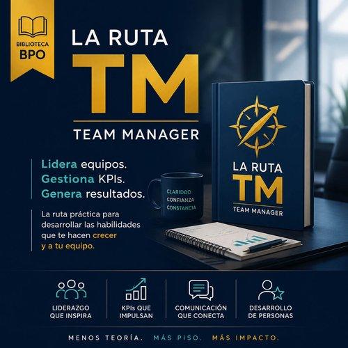
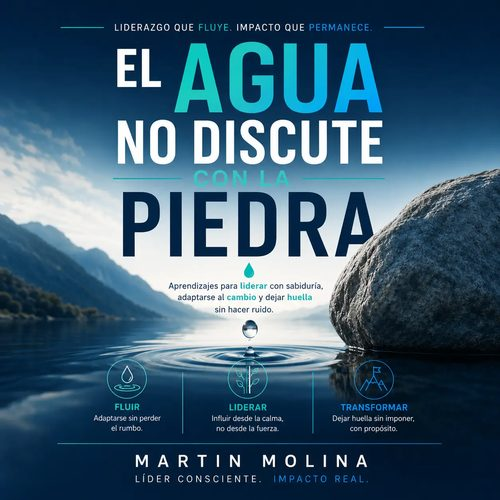

Experiencia real. Impacto medible.
Acompañamos a profesionales y empresas del Contact Center en cada etapa de su crecimiento, con formación, mentoría, consultoría y soluciones estratégicas basadas en metodologías reales, no en teoría genérica.
Cómo trabajamos
Desde formar tus habilidades hasta transformar tu operación completa — un camino, no piezas sueltas.
eBooks y rutas de aprendizaje en Biblioteca BPO™.
Acompañamiento 1:1 para tu crecimiento.
Consultoría a la medida de tu operación.
Evaluación rápida para identificar oportunidades.
Análisis profundo de procesos, personas y tecnología.
Acompañamiento hasta que el resultado sea medible.
Biblioteca BPO™
Accede a la colección más completa de eBooks y recursos prácticos para impulsar tu operación y tu carrera — con rutas específicas para Team Managers, QA y liderazgo operativo.
Conocer Biblioteca BPO™ →

Enfoques de trabajo
Formación práctica para agentes, líderes y equipos de alto desempeño.
Saber más →Evaluamos tu operación con objetividad para identificar brechas y oportunidades.
Saber más →Implementamos soluciones que aumentan eficiencia, calidad y rentabilidad.
Saber más →Consultoría para transformar resultados con criterio operativo real.
Saber más →Da el siguiente paso hacia una operación más eficiente, equipos más fuertes y clientes más satisfechos.